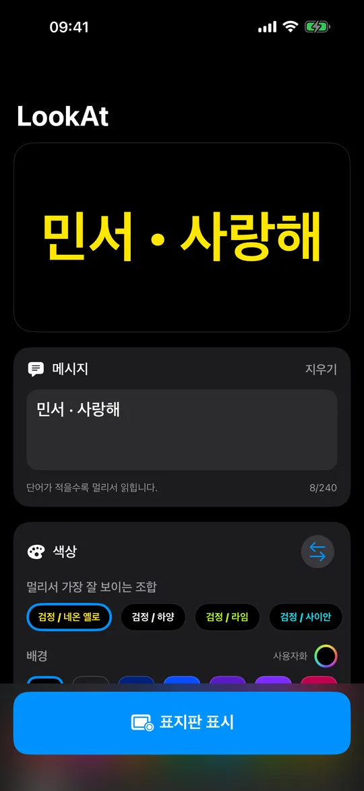
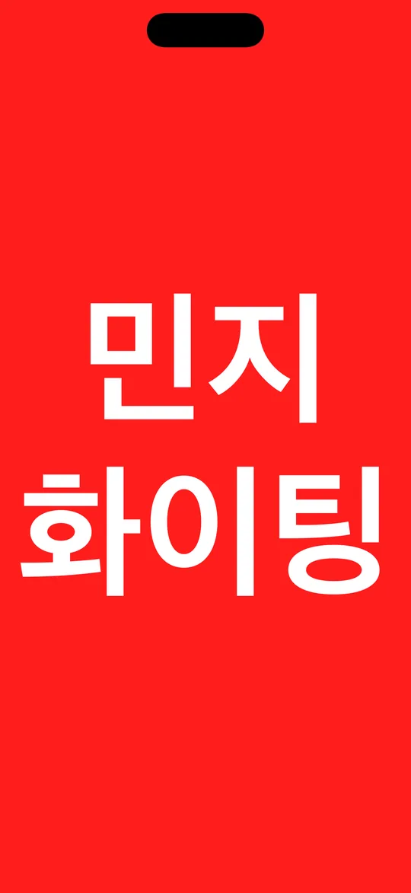
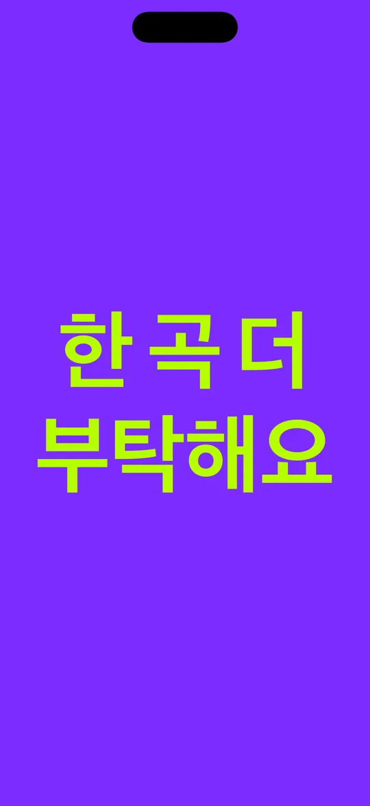
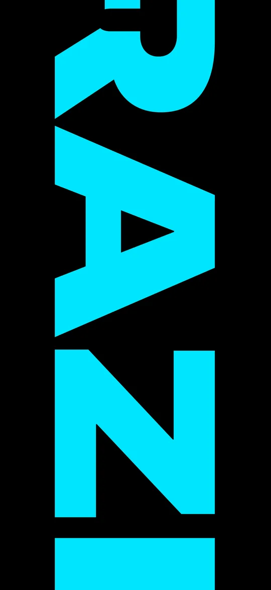

측정한 색
정말로
읽히는 조합
실제 WCAG 대비를, 불이 꺼지기 전에 검사합니다.
휴대폰을 높이
입력하고, 색 두 개 고르고, 들어 올리기.
휴대폰을 들어 올리고, 눈에 띄세요. LookAt은 화면을 표지판으로 바꿉니다. 글자는 객석 맨 뒤에서도 읽을 수 있는 크기입니다. 메시지를 입력하고, 색을 두 개 고르고, 들어 올리기만 하면 됩니다.
무료 · iPhone과 iPad · iOS 18 이상
거리를 이기는 것은 글자 높이와 대비이지, 밝기만이 아닙니다. LookAt은 모든 서체를 대문자 높이 기준으로 맞추기 때문에, 어떤 서체를 골라도 글자가 화면에서 차지하는 비율이 같습니다. 그리고 두 색 사이의 실제 WCAG 대비를 측정해, 아무도 읽을 수 없는 조합으로 어두운 공연장에 들어가기 전에 알려 주고, 조합이 정말 아슬아슬할 때는 테두리에 빛을 더합니다.

측정한 색
실제 WCAG 대비를, 불이 꺼지기 전에 검사합니다.
도트 매트릭스
서체가 아닙니다. 글자를 램프 하나하나로 그립니다.

배경 15색 · 글자 14색
일곱 가지 서체, 모두 거리를 기준으로 골랐습니다.

스크롤 · 고정 · 깜박임
최대 240자, 속도는 원하는 대로.

글자 크기
글자 크기를 100%로. 아주 큰 글자가 흐릅니다.
계정 없음. 광고 없음. 추적 없음. 네트워크도 전혀 없습니다. LookAt은 연결을 요청한 적이 없으므로, 입력한 내용이 휴대폰을 벗어나지 않습니다.
휴대폰이 할 수 있는 일에 대한 한마디. 화면은 밝지만 대형 전광 스크린은 아닙니다. 직사광선 아래나 수십 미터를 넘는 거리에서는 아무리 좋은 색 조합도 집니다. LookAt이 가장 강한 곳은 실내, 해가 진 뒤, 그리고 사람들 속입니다. 입국장, 공연장, 결승선, 학교 발표회.
오늘 밤 콘서트, 신청곡을 외치고 싶나요? 인파에 묻혀 있나요? LookAt에 적고, 휴대폰을 들어 올려 눈에 띄세요.
무료 · iPhone과 iPad · iOS 18 이상